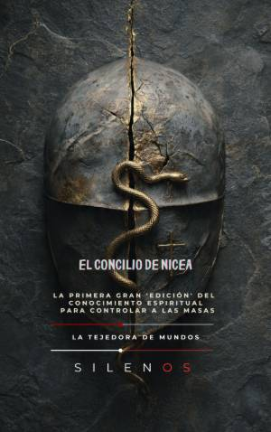

Illuminati
El Concilio de Nicea: La Gran Edición del Conocimiento Espiritual
Sinopsis
¿Fue el Concilio de Nicea un acto de fe o la operación política más exitosa de la historia? En el año 325 d.C., el mundo cambió para siempre. No solo nació un dogma, sino una tecnología de gobierno que fusionó el poder imperial con la estructura religiosa para crear un consenso imperativo. Este libro propone un viaje fascinante a las entrañas del Imperio Romano, revelando cómo Constantino el Grande transformó una fe perseguida en el motor administrativo de un Estado en crisis. ¿Qué descubrirás en esta obra? La ingeniería de la hibridación: Cómo se fusionaron símbolos antiguos como el Sol Invictus con la narrativa cristiana para unificar a las masas. Poder y Jerarquía: La transición de las casas-iglesia lideradas por mujeres hacia una estructura clerical formal y masculina diseñada para el control social. Geopolítica del Dogma: Las intensas rivalidades entre Roma, Antioquía y Alejandría que marcaron el destino de Occidente. Censura y Canon: La realidad histórica detrás de la quema de libros, los textos prohibidos y la creación de una "verdad oficial". Intrigas Palaciegas: Los oscuros episodios de la corte imperial, desde la tragedia de Crispo y Fausta hasta el ascenso de figuras como Helena y su arqueología sagrada. Una perspectiva única A través de 45 capítulos detallados, El Concilio de Nicea analiza este evento no solo como un hito teológico, sino como una herramienta de gestión pública. Desde la burocratización de la Eucaristía hasta la formación del ciudadano dócil mediante la pedagogía de la culpa, el libro explora cómo las decisiones tomadas hace diecisiete siglos siguen moldeando nuestra percepción de la autoridad, la moral y la espiritualidad en la actualidad. Con un estilo riguroso pero narrativo, los autores Manuel Rodsua y Cristina Lobo desentierran los saberes suprimidos y las místicas de resistencia que sobrevivieron en los márgenes de la historia. Es una lectura esencial para quienes buscan entender la relación entre el monoteísmo y la monarquía, y cómo se construyó el canon que rige el pensamiento occidental. Atrévete a cuestionar el legado de Nicea y descubre cómo se fabricó el consenso que aún nos define.